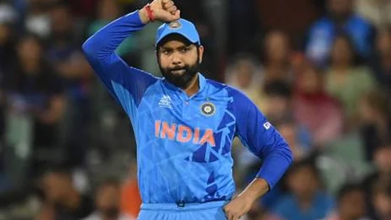
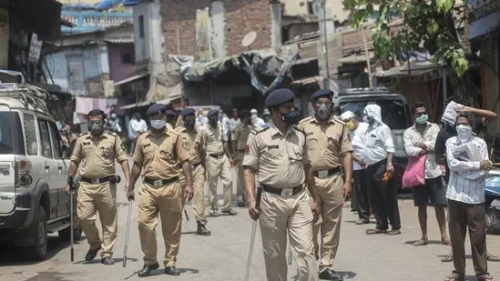
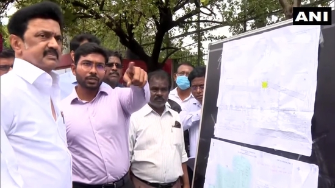
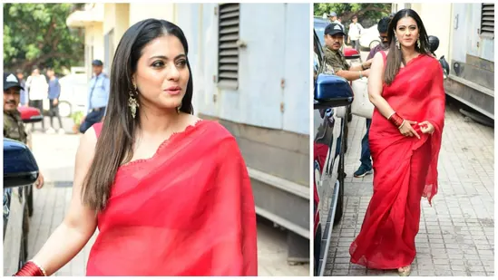

As Pakistan sweat over Shaheen's injury, a former PCB medical officer feels the road ahead for Afridi could be in danger if proper precautions are not taken or he is hurried back.

Pakistan's T20 World Cup final against England ended up being a forgettable affair for two reasons. One was obviously the defeat as Pakistan failed to get over the line in a final twice in three months, and second was the injury to Shaheen Afridi. The knee injury that kept Afridi out of action for over three months, resurfaced as the left-arm pacer put in a slide during an attempt to take the catch, but although he succeeded in dismissing Harry Brook of England, in the process Afridi did his knee some severe damage.
Apart from 'Russia's irresponsible threats of nuclear use' Biden also 'raised concerns about the DPRK's (North Korea) provocative behaviour'.

By HT News Desk US president Joe Biden and China's Xi Jinping agreed Monday 'a nuclear war should never be fought' and 'underscored their opposition to the use of or threat of use of nuclear weapons in Ukraine'. A White House statement following the meeting - on the sidelines of the G20 summit in Indonesia - said multiple issues had been raised, including climate change and human rights (in Xinjiang, Tibet and Hong Kong).
With Rohit Sharma already 35 and the next T20 World Cup two years away, this certainly in the time for a change in guard, feels a former India pacer. He reckons either Hardik Pandya or Rishabh Pant can take over the command of the team and usher India's T20 team into a new era.
Under Rohit Sharma, the Indian cricket team has suffered defeats in two big multi-team tournaments in three months. In September, India failed to qualify for the semifinals of the Asia Cup, which was a big blow following defeats to Pakistan and Sri Lanka in the Super 4. Series wins over Australia and South Africa at home restored some hope but it soon turned into disappointment as India went crashing out of the T20 World Cup following a 10-wicket hammering at the hands of England in the semifinal
Updated on Nov 14, 2022 06:58 PM IST The accused confessed to the murder and told police he cut the woman's body in to 35 pieces, a senior police officer said.
Chennai and several other parts of Tamil Nadu are yet to get respite from rain as the India Meteorological Department (IMD) has predicted more downpour accompanied by thunderstorms on Sunday. The weather department has also issued a red alert in parts of the southern state....read mor
The entire star cast of Salaam Venky including lead actors Kajol and Vishal Jethwa along with Rahul Bose, Rajeev Khandelwal and Aahana Kumra joined director Revathi for the trailer launch on Monday. ..
